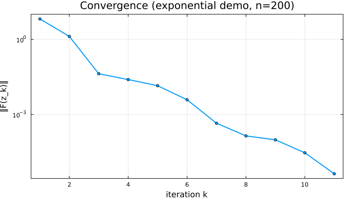

Tutorial
A hands-on walkthrough of solving monotone nonlinear equations with DFMethods.jl, with emphasis on the callback architecture that lets you observe, instrument, and stop solves on your own terms.
Background. DFMethods.jl is a configurable framework for derivative-free projection methods applied to constrained nonlinear equations $F(x) = 0,\ x \in X$, with $X \subset \mathbb{R}^n$ closed convex and $F$ continuous and (pseudo-)monotone. The library was developed alongside research published as Ibrahim, Alshahrani & Al-Homidan (2026), A Unified Derivative-Free Projection Framework for Convex-Constrained Nonlinear Equations,
10.1007/s10957-025-02826-x.
If you're brand new to the package, skim Quickstart first; this page assumes you've seen solve(prob, DFProjection()) once before.
1. Setup
We start with a smooth scalar-separable problem on $\mathbb{R}^n$:
\[F_i(x) = \exp(x_i) - 1, \quad i = 1, \dots, n,\]
so the unique zero is $x^* = 0$. We use a plain NonlinearProblem (the constraint set defaults to $\mathbb{R}^n$, i.e. unconstrained).
using DFMethods, NonlinearSolve
using SciMLBase, LinearAlgebra
n = 200
# `NonlinearProblem` expects a 2-arg operator `f(u, p)`.
F = (u, p) -> exp.(u) .- 1
x0 = ones(n)
prob = NonlinearProblem(F, x0)
sol = solve(prob, DFProjection())
(retcode = sol.retcode, iters = sol.stats.nsteps,
fevals = sol.stats.nf, resid = norm(F(sol.u, nothing)))(retcode = SciMLBase.ReturnCode.Success, iters = 11, fevals = 37, resid = 6.93788164580497e-7)That's the whole flow: define F, wrap in a NonlinearProblem, hand to solve with a DFProjection algorithm instance. Everything else in this tutorial is about customizing that algorithm or observing what it's doing.
2. Choosing components
DFProjection is a configurable solver — five pluggable components, each with sensible defaults:
| Field | Default | What it controls |
|---|---|---|
direction | SpectralThreeTerm() | search direction $d_k$ |
linesearch | ResidualNormBacktrack() | accepted step size $\alpha_k$ |
inertial | Inertial(0.25) | momentum on $w_k$ |
iterate_update | SolodovSvaiterProjection() | how $x_{k+1}$ is built |
stopping | AnyOf(AbsResidualTol, MaxIters) | termination conditions |
Swap any one (or several) at construction. For example, here we use a different built-in line search and a heavier inertial weight:
alg = DFProjection(;
linesearch = AdaptiveClampedBacktrack(),
inertial = Inertial(0.5),
)
sol = solve(prob, alg)
(retcode = sol.retcode, iters = sol.stats.nsteps, fevals = sol.stats.nf)(retcode = SciMLBase.ReturnCode.Success, iters = 16, fevals = 52)For the full list of built-in components and how to write your own, see Extending.
3. Built-in observer callbacks
DFMethods ships two built-in observer callbacks that attach to any DFProjection via the callbacks keyword.
LoggingCallback — a per-iteration trace
sol = solve(prob,
DFProjection(; callbacks = [LoggingCallback(columns = (:k, :F_norm, :α, :n_evals),
every = 5)]))
(retcode = sol.retcode, iters = sol.stats.nsteps)(retcode = SciMLBase.ReturnCode.Success, iters = 11)columns is any subset of HISTORY_FIELDS; every = 5 prints every fifth iteration. A header appears at :initialize, a summary footer at :terminate.
HistoryCallback — collect per-iteration data for analysis
HistoryCallback appends a NamedTuple per iteration to its history field. You pick which scalars to capture. Below, we collect just $(k, \|F(z_k)\|)$ then plot the convergence curve.
using Plots
gr()
hist = HistoryCallback(fields = (:k, :F_norm))
sol = solve(prob, DFProjection(; callbacks = [hist]))
ks = [row.k for row in hist.history]
fnorms = [row.F_norm for row in hist.history]
plot(ks, fnorms;
yscale = :log10, lw = 2, marker = :circle, markersize = 3,
xlabel = "iteration k", ylabel = "‖F(z_k)‖",
title = "Convergence (exponential demo, n=$n)",
legend = false, framestyle = :box, grid = true,
size = (700, 400))
The :F_norm field is the residual at the last trial point $z_k$ — computed live every iteration. (Caveat: :resid from HISTORY_FIELDS is only populated at termination; use :F_norm for live convergence data.)
4. Stopping criteria are callbacks
A useful design choice in DFMethods: every stopping criterion is itself an AbstractCallback. Concretely, they all subtype AbstractStoppingCriterion <: AbstractCallback and return (stop::Bool, retcode::Symbol) from on_event!. You compose them with AnyOf (terminate on first match).
The built-in set:
| Criterion | Stops when |
|---|---|
AbsResidualTol(ε) | $|F(z_k)| < \varepsilon$ |
RelResidualTol(η) | $|F(z_k)| < \eta \cdot |F(x_0)|$ |
MaxIters(N) | $k \ge N$ |
MaxFEvals(N) | cumulative F evals reach $N$ |
MaxTime(T) | wall-clock seconds since solve start $> T$ |
StepNormTol(τ) | $|x_{k+1} - x_k| < \tau$ |
DirectionNormTol(τ) | $|d_k| < \tau$ |
For example, here we give the solver a deliberately tight residual tolerance, a generous iteration budget, and a tiny wall-clock cap so the time limit fires first:
alg_capped = DFProjection(;
stopping = AnyOf(AbsResidualTol(1e-12),
MaxIters(10_000),
MaxTime(0.05)), # 50 ms
)
wall = @elapsed sol = solve(prob, alg_capped; verbose = false) # MaxTime is the expected exit here
(retcode = sol.retcode, iters = sol.stats.nsteps,
wallclock_seconds = round(wall; digits = 3))(retcode = SciMLBase.ReturnCode.Terminated, iters = 1, wallclock_seconds = 0.353)sol.retcode will reflect which criterion fired first (a Symbol from (:Success, :MaxIters, :MaxTime, :MaxFEvals, ...) mapped through SciML's return-code enum). Useful for telemetry: a :MaxTime return is a different failure mode than :MaxIters.
5. Writing a custom callback
The same on_event!(cb, cache, event::Symbol) contract that built-in observers and stopping criteria use is also the user-extension point. Subtype AbstractCallback, implement on_event!, and you can observe or record anything reachable from the solver's cache at any of the four events: :initialize, :post_linesearch, :post_iter, :terminate.
Here's a minimal callback that saves the current iterate $x_k$ every N iterations — handy for downstream trajectory analysis or making an animation of the path through $\mathbb{R}^n$:
mutable struct IterateSnapshotCallback <: DFMethods.AbstractCallback
every::Int
snapshots::Vector{Vector{Float64}}
end
IterateSnapshotCallback(; every::Int = 10) =
IterateSnapshotCallback(every, Vector{Float64}[])
function DFMethods.on_event!(cb::IterateSnapshotCallback, cache, event::Symbol)
if event === :post_iter && cache.k % cb.every == 0
push!(cb.snapshots, copy(cache.x)) # copy! cache.x is mutated each iter
end
return nothing
end
snap = IterateSnapshotCallback(every = 1) # capture every iter for the demo
sol = solve(prob, DFProjection(; callbacks = [snap]))
(snapshots_collected = length(snap.snapshots),
first_snapshot_norm = round(norm(first(snap.snapshots)); digits = 6),
last_snapshot_norm = round(norm(last(snap.snapshots)); digits = 6))(snapshots_collected = 11, first_snapshot_norm = 5.394073, last_snapshot_norm = 4.0e-6)Three rules to know:
cache.xis mutated in place by the solver. If you want to keep a snapshot,copy(cache.x)— not just push the reference.on_event!returnsnothingfor observers. (Stopping criteria return(Bool, Symbol)— a different protocol on the same abstract type.)- Events fire in a fixed order per iteration:
:initializeonce at start, then per iteration:post_linesearch→:post_iter, then:terminateonce at end.
See Extending for the full on_event! contract and the list of fields available on cache.
6. A small comparative sweep
Putting it together: let's compare a few built-in line searches across a small set of inline-defined problems. We collect the results in a DataFrame and show the table inline.
using DataFrames
# Three small monotone test operators (paper-agnostic; widely used in
# the literature on derivative-free projection methods).
problems = [
("smooth_exp" , 100, (u, p) -> exp.(u) .- 1),
("smooth_sine" , 100, (u, p) -> 2.0 .* u .- sin.(u)),
("identity_log", 100, (u, p) -> u .+ log.(abs.(u) .+ 1) ./ 100),
]
line_searches = [
("LS-const", ConstantBacktrack()),
("LS-residual", ResidualNormBacktrack()),
("LS-adaptive", AdaptiveClampedBacktrack()),
]
results = DataFrame(problem = String[],
linesearch = String[],
iters = Int[],
fevals = Int[],
converged = Bool[],
F_norm = Float64[])
for (pname, n_p, F_p) in problems
x0_p = ones(n_p)
for (lname, ls) in line_searches
sol = solve(NonlinearProblem(F_p, x0_p),
DFProjection(; linesearch = ls); verbose = false) # some configs may not converge; we record it
push!(results, (
problem = pname,
linesearch = lname,
iters = sol.stats.nsteps,
fevals = sol.stats.nf,
converged = SciMLBase.successful_retcode(sol.retcode),
F_norm = norm(F_p(sol.u, nothing)),
))
end
end
results| Row | problem | linesearch | iters | fevals | converged | F_norm |
|---|---|---|---|---|---|---|
| String | String | Int64 | Int64 | Bool | Float64 | |
| 1 | smooth_exp | LS-const | 12 | 40 | true | 7.60688e-7 |
| 2 | smooth_exp | LS-residual | 12 | 40 | true | 7.60688e-7 |
| 3 | smooth_exp | LS-adaptive | 12 | 40 | true | 7.60688e-7 |
| 4 | smooth_sine | LS-const | 10 | 34 | true | 9.89621e-7 |
| 5 | smooth_sine | LS-residual | 10 | 34 | true | 9.89621e-7 |
| 6 | smooth_sine | LS-adaptive | 10 | 34 | true | 9.89621e-7 |
| 7 | identity_log | LS-const | 12 | 41 | true | 2.29617e-7 |
| 8 | identity_log | LS-residual | 12 | 41 | true | 2.29617e-7 |
| 9 | identity_log | LS-adaptive | 12 | 41 | true | 2.29617e-7 |
Each row is one (problem, line search) cell. Median CPU and other columns are easy to add — see the source of any column on the API Reference page or the HISTORY_FIELDS listing.
Next steps
- Algorithm — how
step!actually composes the six pluggable components into one outer iteration. - Constraint Sets — solving on a box, a halfspace, the intersection, or your own user-defined $X$.
- Extending — full contracts for writing custom search directions, line searches, inertial rules, iterate-update strategies, and stopping criteria.
- For a larger benchmark template — multi-problem sweeps with SQLite-backed result storage, threaded execution, performance-profile generation — see the companion
DFMethods-starterrepository.